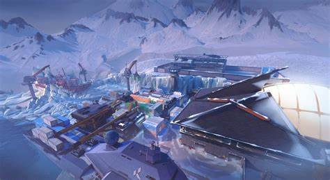

ICEBOX
Icebox est une map très ouverte et verticale, où le combat a longue distance y est roi.Elle possède deux sites de Spike aux styles radicalement opposés.Le site A est en intérieur et plutôt claustrophobique tandis que le site B est ouvert et en extérieur.Il est possible d'aller sur les deux sites par le milieu mais la visibilité est pas bonne et le milieu est un avantage aux défenseurs.